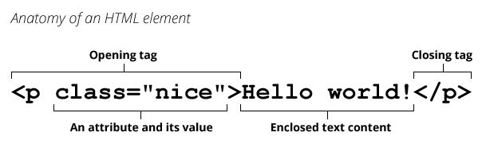

HTML
HTML (HyperText Markup Language) is a descriptive language that specifies webpage structure.
Brief history
In 1990, as part of his vision of the Web, Tim Berners-Lee defined the concept of hypertext, which Berners-Lee formalized the following year through a markup mainly based on SGML. The IETF began formally specifying HTML in 1993, and after several drafts released version 2.0 in 1995. In 1994 Berners-Lee founded the W3C to develop the Web. In 1996, the W3C took over the HTML work and published the HTML 3.2 recommendation a year later. HTML 4.0 was released in 1999 and became an ISO standard in 2000.
At that time, the W3C nearly abandoned HTML in favor of XHTML, prompting the founding of an independent group called WHATWG in 2004. Thanks to WHATWG, work on HTML continued: the two organizations released the first draft of HTML5 in 2008 and an official standard in 2014. The term "HTML5" is just a buzzword referring to modern web technologies which are part of the HTML Living Standard.
Concept and syntax
An HTML document is a plaintext document structured with elements. Elements are surrounded by matching opening and closing tags. Each tag begins and ends with angle brackets (<>). There are a few empty or void elements that cannot enclose any text, for instance <img>.
You can extend HTML tags with attributes, which provide additional information affecting how the browser interprets the element:

An HTML file is normally saved with an .htm or .html extension, served by a web server, and can be rendered by any Web browser.